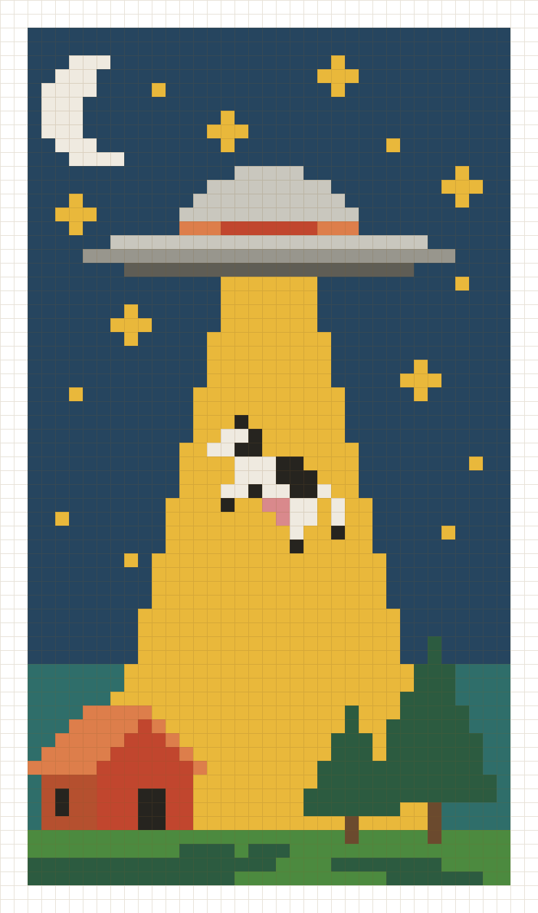

Abducted Cow — Free Tapestry Crochet Pattern
Abducted Cow — Patrón de Tapestry Crochet Gratis
39 × 66 · 2,574 stitches · 16 colors · by NaredCraft
39 × 66 · 2,574 puntos · 16 colores · por NaredCraft

About this pattern
Sobre este patrón
A night scene in tapestry crochet: a flying saucer beams up a very surprised cow while the farmhouse sleeps. Worked flat in single crochet colorwork — great for wall hangings, tote bags and blanket panels.
Una escena nocturna en tapestry crochet: un platillo volador abduce a una vaca muy sorprendida mientras la granja duerme. Se teje plano en punto bajo con cambio de color — ideal para tapices, bolsas y paneles de manta.
- Full-color symbol chart, readable even printed in black & white
- Written row-by-row pattern with color runs and RS/WS sides
- Yarn color legend with stitch counts per color
- Printable PDF, US Letter
- Chart de símbolos a todo color, legible incluso impreso en blanco y negro
- Patrón escrito fila a fila con tramos de color y lados RS/WS
- Leyenda de colores con conteo de puntos por color
- PDF listo para imprimir, tamaño carta
Download the free PDF
Descarga el PDF gratis
Download PDF · English Descargar PDF · Español Pattern file for the app (.rcpattern) Archivo de patrón para la app (.rcpattern)Import it in RoundCraft (v1.0.15+): Tools → Tapestry → Import. Follow the chart stitch by stitch with the built-in counter.
Impórtalo en RoundCraft (v1.0.15+): Herramientas → Tapestry → Importar. Sigue el chart punto por punto con el contador integrado.
Open in the RoundCraft app Abrir en la app RoundCraftPersonal use · you may sell finished items · please don't redistribute the PDF. This pattern is always free on this page.
Uso personal · puedes vender las piezas terminadas · no redistribuyas el PDF. Este patrón es siempre gratuito en esta página.
Crochet it with RoundCraft
Téjelo con RoundCraft
RoundCraft is the professional crochet app — Count. Track. Price. Smart row counters, a project timer and a quote calculator to price your finished pieces, plus a tapestry mode to follow this pattern stitch by stitch.
RoundCraft es la app profesional para tejer — Cuenta. Cronometra. Cotiza. Contadores de vueltas inteligentes, cronómetro de proyecto y calculadora para cotizar tus piezas, con modo tapestry para seguir este patrón punto por punto.
Get RoundCraft on Google Play Descarga RoundCraft en Google Play